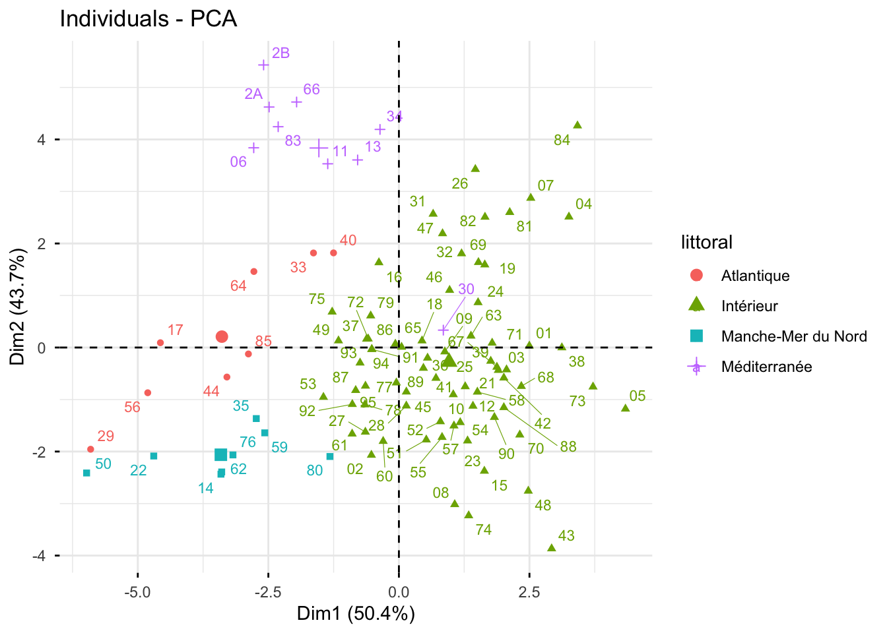
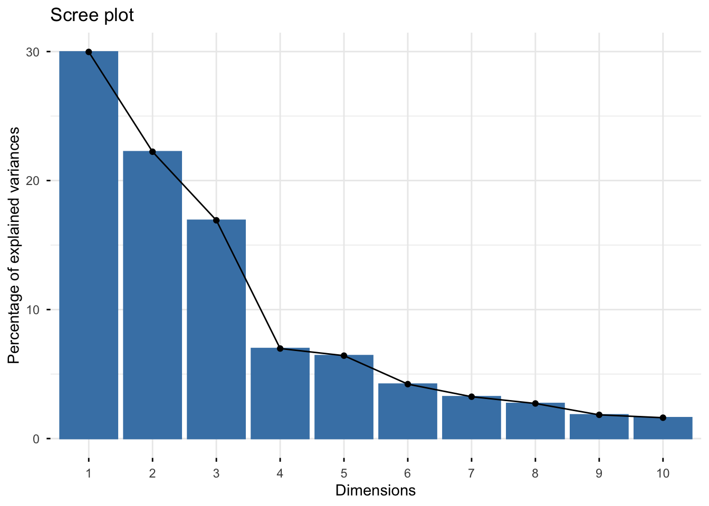
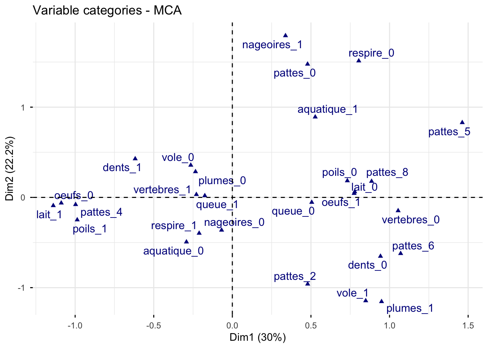
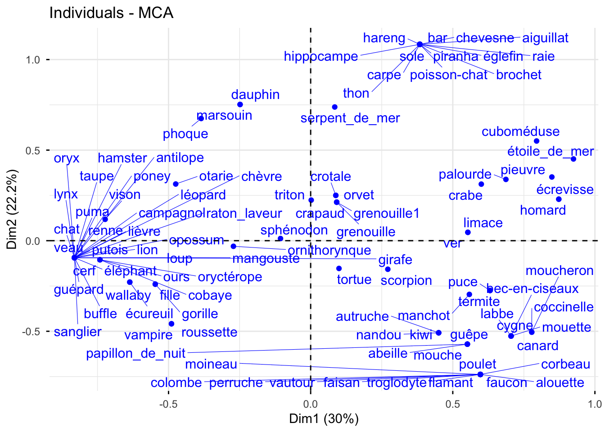

library(mclust)
library(cluster)
library(clusterSim)
library(factoextra)
library(FactoMineR)
library(ggplot2)
library(reshape2)
library(circlize)
library(viridis)
library(gridExtra)
library(ggalluvial)
library(leaflet)
library(sf)
library(dplyr)TP 3 - Classification Ascendante Hiérarchique (CAH)
Sujet
L’objectif de ce TP est d’illustrer les notions abordées pour la classification ascendante hiérarchique. Les librairies R nécessaires pour ce TP :
1 Clustering des départements selon leur climat par CAH
1.1 Reprise des données
On reprend dans ce TP le jeu de données TemperaturesDepartements2018-2024.csv (disponible sur la page moodle du cours) décrit et étudié dans le TP 1. Pour rappel, chacun des \(n=96\) départements de France métropolitaine est décrit par 9 indicateurs climatiques calculés sur les années 2018 à 2024 (t_annuelle, t_hiver, tmin_hiver, j_gel, t_ete, tmax_ete, j_chaud, ampl_annuelle, ampl_jour) et par les variables qualitatives departement, region, littoral et massif.
On charge les données et on centre-réduit les variables quantitatives (elles ne sont pas mesurées dans les mêmes unités).
temp <- read.table("TemperaturesDepartements2018-2024.csv", header=T, encoding = "UTF-8")
rownames(temp) <- temp$code_dep
temp <- temp[,-1]
temp$region <- as.factor(temp$region)
temp$littoral <- as.factor(temp$littoral)
temp$massif <- as.factor(temp$massif)
quanti <- 5:13
tempinit <- temp
temp[,quanti] <- scale(temp[,quanti], center=T, scale=T)
Xtemp <- temp[,quanti]
head(tempinit) departement region littoral massif
01 Ain Auvergne-Rhône-Alpes Intérieur Non
02 Aisne Hauts-de-France Intérieur Non
03 Allier Auvergne-Rhône-Alpes Intérieur Non
04 Alpes-de-Haute-Provence Provence-Alpes-Côte d'Azur Intérieur Oui
05 Hautes-Alpes Provence-Alpes-Côte d'Azur Intérieur Oui
06 Alpes-Maritimes Provence-Alpes-Côte d'Azur Méditerranée Oui
t_annuelle t_hiver tmin_hiver j_gel t_ete tmax_ete j_chaud ampl_annuelle
01 12.95 5.04 1.36 55.1 21.36 28.22 39.0 18.05
02 11.76 5.27 2.58 35.3 18.77 24.61 11.3 15.00
03 12.78 5.58 1.48 57.1 20.54 27.51 35.0 16.56
04 14.29 6.43 1.46 37.7 23.32 30.62 61.1 18.89
05 12.13 3.86 -1.26 80.6 21.00 28.27 36.3 19.23
06 16.99 10.55 6.95 0.0 24.35 27.71 18.1 15.56
ampl_jour
01 10.73
02 8.77
03 11.50
04 12.04
05 12.14
06 6.92On refait l’ACP pour la visualisation des résultats dans la suite.
resacp <- PCA(temp[,-1], quali.sup=1:3, scale.unit = TRUE, graph=FALSE)
fviz_pca_var(resacp, axes=c(1,2), repel=T)
fviz_pca_ind(resacp, geom=c("point","text"), labelsize=3, habillage=2, repel=T)
1.2 Fonctions auxiliaires
Comme dans le TP 1, vous pourrez visualiser les clusterings obtenus sur la carte de France à l’aide de la fonction visualclust() suivante (le fichier Depart.geojson est disponible sur moodle) :
# fonction auxiliaire pour représentation géographique
# varquali : variable qualitative (par exemple une classification), couleur par modalité
# codes : codes des départements correspondant à varquali (par défaut les noms de varquali)
# Les classes sont associées aux polygones par une jointure sur le code du département
# (l'ordre des départements dans le fichier geojson n'est pas le même que dans les données)
departements_geojson <- st_read("Depart.geojson", quiet = TRUE)
visualclust <- function(departements_geojson, varquali, codes = names(varquali)){
if (is.null(codes)) stop("Préciser les codes des départements avec l'argument codes")
varquali <- as.factor(varquali)
df <- departements_geojson %>%
left_join(data.frame(code = as.character(codes), classification = varquali),
by = "code")
# Définir des couleurs (une par modalité)
pal <- colorFactor(topo.colors(nlevels(varquali)), levels(varquali))
# Créer la carte Leaflet
# pas de fond de carte OpenStreetMap (addTiles()), bloqué hors d'un site web
gcarte <- leaflet(df) %>%
addPolygons(
fillColor = ~pal(classification), # Couleur en fonction de la classification
weight = 1,
opacity = 1,
color = "black",
dashArray = "3",
fillOpacity = 0.7,
popup = ~paste("Département : ", nom, "<br>Classification : ", classification)
) %>%
addLegend(
pal = pal,
values = ~classification,
title = "Classification",
opacity = 1
)
return(gcarte)
}Vous pourrez comparer deux clusterings à l’aide d’un graphique alluvial en utilisant la fonction alluvtwoclust() suivante :
alluvtwoclust <- function(classif1, classif2, nom1, nom2){
# étiquettes des classes : "nom-k1", "nom-k2", ... si les classes sont des numéros,
# "nom-libellé" si les classes sont nommées
etiq <- function(nom, cl) if (is.numeric(cl)) paste0(nom,"-k",cl) else paste0(nom,"-",cl)
clust1 <- etiq(nom1, classif1)
clust2 <- etiq(nom2, classif2)
Tab <- melt(table(clust1,clust2))
g <- ggplot(Tab,aes(y=value,axis1=clust1,axis2=clust2))+
geom_alluvium(aes(fill=clust1))+
geom_stratum(width = 1/12)+
geom_text(stat = "stratum", aes(label = after_stat(stratum)))+
theme(legend.position = "none")
return(g)
}Pour interpréter les classes, la fonction profilclust() suivante trace la distribution de chaque variable quantitative (dans ses unités d’origine) par classe :
# clust : clustering étudié
# Data : données quantitatives (non centrées-réduites pour garder les unités)
# output : violin-plots de chaque variable par classe
profilclust <- function(clust, Data){
df <- data.frame(Data, Classe = as.factor(clust))
df <- melt(df, id = "Classe")
g <- ggplot(df, aes(x = Classe, y = value, fill = Classe)) +
geom_violin() +
facet_wrap(~variable, scales = "free_y") +
xlab("") + ylab("") + theme(legend.position = "none")
return(g)
}1.3 CAH avec différentes mesures d’agrégation
Question : A l’aide de la fonction hclust(), faites une classification hiérarchique des départements avec les mesures d’agrégation single, complete et average respectivement. Comparez visuellement les dendrogrammes associés. Commentez.
# A COMPLETER
d <- dist(...)
hclustsingle <- hclust(...)
hclustcomplete <- hclust(...)
hclustaverage <- hclust(...)
# Dendrogramme
plot(hclustsingle, hang=-1, cex=0.5)
...
fviz_dend(hclustsingle, cex=0.4)
...Question : Déduisez du dendrogramme avec la mesure d’agrégation complete une classification en 3 classes. Vous pouvez utiliser la fonction cutree(). Visualisez-la sur le premier plan de l’ACP et sur la carte. Comparez-la avec les variables littoral et massif. Commentez.
# A COMPLETER
ClassK3 <- cutree(...)
fviz_dend(...)
fviz_pca_ind(....)
visualclust(departements_geojson, varquali=as.factor(ClassK3), codes=rownames(Xtemp))Question : Tracez la distribution des variables quantitatives en fonction de la classification en 3 classes de la question précédente. Vous pouvez utiliser la fonction auxiliaire profilclust(). Commentez.
# A COMPLETER
profilclust(...)1.4 CAH avec la mesure de Ward
Question : Dans cette question et pour les suivantes, on se focalise sur la mesure d’agrégation de Ward. Ajustez une classification hiérarchique avec la mesure de Ward. Que représentent les hauteurs du dendrogramme dans ce cas ? Vérifiez-le numériquement et tracez l’évolution de l’inertie intra-classe en fonction du nombre de classes.
# A COMPLETER
hward <- hclust(...)
fviz_dend(hward, cex=0.4)Question : Déterminez le nombre de classes à retenir avec l’indice de Calinski-Harabasz. Vous pouvez vous aider de la fonction index.G1() de la librairie clusterSim. Tracez la classification obtenue sur le dendrogramme, sur le premier plan factoriel de l’ACP et sur la carte.
# A completer
CH <- NULL
Kmax <- 15
for (k in 2:Kmax){
CH <- c(CH, ....)
}
daux <- data.frame(NbClust=2:Kmax, CH=CH)
ggplot(daux, aes(x=NbClust, y=CH)) + geom_line() + geom_point()
ClustCH <- cutree(hward, ....)
fviz_dend(....)
fviz_pca_ind(....)
visualclust(....)Question : Déterminez le nombre de classes à retenir avec le critère Silhouette. Vous pouvez vous aider de la fonction index.S() de la librairie clusterSim. Comparez avec la classification de la question précédente.
# A COMPLETERQuestion : Comparez la classification obtenue avec la méthode des Kmeans dans le TP 1 pour \(K=5\) classes et celle obtenue par CAH avec la mesure de Ward pour \(K=6\).
# A COMPLETER2 Clustering des données Zoo par CAH
2.1 Lecture des données et fonctions auxiliaires
On reprend dans cette partie le jeu de données zoo_restreint.txt (101 animaux décrits par 12 variables qualitatives, cf. TP 1) ainsi que les fonctions auxiliaires comme dans le TP 1. On refait une analyse en composantes multiples pour la suite.
zoo <- read.table("zoo_restreint.txt", header=T, stringsAsFactors = TRUE, encoding = "UTF-8")
for (j in 1:ncol(zoo))
zoo[,j] <- as.factor(zoo[,j])
summary(zoo) poils plumes oeufs lait vole aquatique dents vertebres respire
0:58 0:81 0:42 0:60 0:77 0:65 0:40 0:18 0:21
1:43 1:20 1:59 1:41 1:24 1:36 1:61 1:83 1:80
nageoires pattes queue
0:84 0:23 0:26
1:17 2:27 1:75
4:38
5: 1
6:10
8: 2 res.mca <- MCA(zoo, ncp = 5, graph = FALSE)
fviz_screeplot(res.mca)
fviz_mca_var(res.mca, col.var = "darkblue", repel=T)
fviz_mca_ind(res.mca, repel=T)
Pour la suite du TP, on pourra utiliser la fonction auxiliaire barplotClus() suivante (la même que dans le TP 1), qui permet de tracer la répartition des modalités de variables qualitatives pour chaque classe d’un clustering donné.
# clust : clustering étudié
# Data : jeu de données (variables qualitatives)
# J : indices des variables de Data à représenter
# output : liste de graphiques (un par variable de J) donnant, pour chaque classe de clust,
# la répartition (fréquences) des modalités de la variable
barplotClus <- function(clust, Data, J) {
p <- list()
for (j in seq_along(J)) {
# fréquences des modalités de la variable J[j] dans chaque classe
freq <- as.data.frame(prop.table(table(clust = clust, value = Data[, J[j]]), margin = 1),
responseName = "perc")
p[[j]] <- ggplot(freq, aes(x = clust, y = perc, fill = value)) +
geom_bar(stat = "identity") +
labs(x = "Classe", y = "Fréquence", fill = colnames(Data)[J[j]])
}
return(p)
}2.2 CAH directe sur variables qualitatives
Question : Quelle classification par CAH pouvez-vous mettre en place pour traiter des données qualitatives ? Mettez en application votre proposition avec R et étudiez la classification retenue. Vous pourrez vous aider des fonctions daisy() de la librairie cluster, de la fonction hclust(), …
# A COMPLETER2.3 CAH sur les coordonnées de l’ACM
Question : Mettez en place une classification des animaux à partir des coordonnées de l’analyse des correspondances multiples. Comparez avec la classification obtenue dans la section précédente.
# A COMPLETER